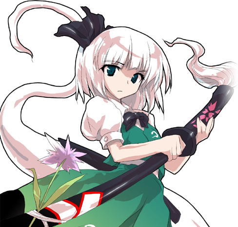

魂魄妖夢 콘파쿠 요우무
キャラクター 캐릭터
白玉楼の庭師で半人半霊の剣士。生真面目で少し堅く、慌てやすい。幽々子は「幽々子様」。
백옥루의 정원사이자 반인반령 검사. 고지식하고 조금 딱딱하며 잘 당황합니다. 유유코는 「幽々子様」.
サンプル4（Hikari） 1:41〜2:03
샘플 4 (Hikari) 1:41〜2:03
参考映像 참고 영상
参考区間 참고 구간 5:43〜5:57 YouTube
台詞 대사
掛け声 기합 (14)
| No | ファイル名 | 状況 상황 | 台詞 | 読み | 意味 뜻 |
|---|---|---|---|---|---|
| 1 | vo_youmu_eff_l_01 | 弱攻撃の掛け声 약공격 기합 | はっ！ | はっ | 핫! |
| 2 | vo_youmu_eff_l_02 | 弱攻撃の掛け声 약공격 기합 | やっ！ | やっ | 얍! |
| 3 | vo_youmu_eff_l_03 | 弱攻撃の掛け声 약공격 기합 | ふっ！ | ふっ | 흡! |
| 4 | vo_youmu_eff_l_04 | 弱攻撃の掛け声 약공격 기합 | てやっ！ | てやっ | 테얏! |
| 5 | vo_youmu_eff_h_01 | 強攻撃の掛け声 강공격 기합 | せやあっ！ | せやあっ | 세야앗! |
| 6 | vo_youmu_eff_h_02 | 強攻撃の掛け声 강공격 기합 | はああっ！ | はああっ | 하아앗! |
| 7 | vo_youmu_eff_h_03 | 強攻撃の掛け声 강공격 기합 | たあっ！ | たあっ | 타앗! |
| 8 | vo_youmu_eff_h_04 | 強攻撃の掛け声 강공격 기합 | でやあっ！ | でやあっ | 데야앗! |
| 9 | vo_youmu_eff_w_01 | 強攻撃のひとこと 강공격 한마디 | 斬る！ | きるっ | 벤다! |
| 10 | vo_youmu_eff_w_02 | 強攻撃のひとこと 강공격 한마디 | 見えた！ | みえたっ | 보였다! |
| 11 | vo_youmu_eff_w_03 | 強攻撃のひとこと 강공격 한마디 | 隙あり！ | すきありっ | 빈틈이다! |
| 12 | vo_youmu_eff_w_04 | 強攻撃のひとこと 강공격 한마디 | 未熟！ | みじゅく | 미숙해! |
| 13 | vo_youmu_eff_s_01 | ジャンプ・ダッシュの小さな息 점프·대시 숨소리 | ふっ | ふっ | 흣 |
| 14 | vo_youmu_eff_s_02 | ジャンプ・ダッシュの小さな息 점프·대시 숨소리 | よっ | よっ | 읏차 |
必殺技 필살기 (11)
| No | ファイル名 | 状況 상황 | 台詞 | 読み | 意味 뜻 |
|---|---|---|---|---|---|
| 15 | vo_youmu_Special1_01 | 必殺技1（技名） 필살기 1 (기술 이름) | 現世斬！ | げんせざん | 현세참! |
| 16 | vo_youmu_Special1_02 | 必殺技1（ひとこと） 필살기 1 (한마디) | 斬り抜けるっ！ | きりぬけるっ | 베고 지나간다! |
| 17 | vo_youmu_Special2_01 | 必殺技2（技名） 필살기 2 (기술 이름) | 冥想斬！ | めいそうざん | 명상참! |
| 18 | vo_youmu_Special2_02 | 必殺技2（ひとこと） 필살기 2 (한마디) | 甘いっ！ | あまいっ | 어림없다! |
| 19 | vo_youmu_Special3_01 | 必殺技3（技名） 필살기 3 (기술 이름) | 結跏趺斬！ | けっかふざん | 결가부참! |
| 20 | vo_youmu_Special3_02 | 必殺技3（ひとこと） 필살기 3 (한마디) | 見切った！ | みきった | 간파했다! |
| 21 | vo_youmu_Special4_01 | 必殺技4（技名） 필살기 4 (기술 이름) | 現世斬っ！ | げんせざんっ | 현세참! |
| 22 | vo_youmu_Special4_02 | 必殺技4（ひとこと） 필살기 4 (한마디) | 上から失礼！ | うえから しつれい | 위에서 실례! |
| 23 | vo_youmu_Special6 | 必殺技6（技名） 필살기 6 (기술 이름) | そこですっ！ | そこですっ | 거기다! |
| 24 | vo_youmu_Special7_01 | 必殺技7（技名） 필살기 7 (기술 이름) | 迷津慈航斬！ | めいしんじこうざん | 미진자항참! |
| 25 | vo_youmu_Special7_02 | 必殺技7（ひとこと） 필살기 7 (한마디) | はあああっ！ | はあああっ | 하아아앗! |
スペルカード宣言 스펠카드 선언 (2)
| No | ファイル名 | 状況 상황 | 台詞 | 読み | 意味 뜻 |
|---|---|---|---|---|---|
| 26 | vo_youmu_Spell1_call | スペルカード（超必殺技）1の宣言 스펠카드 1 선언 | 人鬼「未来永劫斬」！ | じんき みらいえいごうざん | 인귀「미래영겁참」! |
| 27 | vo_youmu_Spell2_call | スペルカード（超必殺技）2の宣言 스펠카드 2 선언 | 獄界剣「二百由旬の一閃」！ | ごっかいけん にひゃくゆじゅんの いっせん | 옥계검「이백유순의 일섬」! |
システム・挑発 시스템·도발 (1)
| No | ファイル名 | 状況 상황 | 台詞 | 読み | 意味 뜻 |
|---|---|---|---|---|---|
| 28 | vo_youmu_Taunt | 挑発 도발 | 少々お待ちを。庭の手入れ中です。 | しょうしょう おまちを にわの ていれちゅうです | 잠시 기다리세요. 정원 손질 중입니다. |
キャラクター固有 캐릭터 고유 (2)
| No | ファイル名 | 状況 상황 | 台詞 | 読み | 意味 뜻 |
|---|---|---|---|---|---|
| 29 | vo_youmu_HalfPhantom_01 | 半霊の追撃が当たった 반령의 추격 적중 | 半霊っ！ | はんれいっ | 반령! |
| 30 | vo_youmu_HalfPhantom_02 | 半霊の追撃が当たった 반령의 추격 적중 | もう一太刀！ | もう ひとたち | 한 칼 더! |
被ダメージ・KO 피격·KO (6)
| No | ファイル名 | 状況 상황 | 台詞 | 読み | 意味 뜻 |
|---|---|---|---|---|---|
| 31 | vo_youmu_hurt_l_01 | 小ダメージ 약한 피격 | くっ！ | くっ | 큭! |
| 32 | vo_youmu_hurt_l_02 | 小ダメージ 약한 피격 | うっ！ | うっ | 윽! |
| 33 | vo_youmu_hurt_l_03 | 小ダメージ 약한 피격 | みょんっ！ | みょんっ | 묭! |
| 34 | vo_youmu_hurt_h_01 | 大ダメージ・吹き飛び・投げられ 강한 피격·날아감·잡힘 | きゃあっ！ | きゃあっ | 꺄악! |
| 35 | vo_youmu_hurt_h_02 | 大ダメージ・吹き飛び・投げられ 강한 피격·날아감·잡힘 | うああああっ！ | うああああっ | 으아아앗! |
| 36 | vo_youmu_hurt_h_03 | 大ダメージ・吹き飛び・投げられ 강한 피격·날아감·잡힘 | ぐうっ……！ | ぐうっ | 크윽…! |
ラウンド・勝敗 라운드·승패 (7)
| No | ファイル名 | 状況 상황 | 台詞 | 読み | 意味 뜻 |
|---|---|---|---|---|---|
| 37 | vo_youmu_Intro_01 | 登場（共通） 등장(공통) | 魂魄妖夢、参ります！ | こんぱくようむ まいります | 콘파쿠 요우무, 갑니다! |
| 38 | vo_youmu_Intro_02 | 登場（共通） 등장(공통) | 真偽のほどは、斬れば分かります。 | しんぎのほどは きればわかります | 진짜인지 아닌지는 베어 보면 압니다. |
| 39 | vo_youmu_Intro_03 | 登場（共通） 등장(공통) | 庭仕事の途中なので、手短に。 | にわしごとの とちゅうなので てみじかに | 정원 일 하던 중이라 짧게 끝내죠. |
| 40 | vo_youmu_RoundWin_01 | ラウンド勝利（短く） 라운드 승리(짧게) | 一本！ | いっぽん | 한 판! |
| 41 | vo_youmu_RoundWin_02 | ラウンド勝利（短く） 라운드 승리(짧게) | 斬りました。 | きりました | 베었습니다. |
| 42 | vo_youmu_Win_01 | 試合に勝利 게임 승리 | 斬って、分かりました。 | きって わかりました | 베어 보니 알겠네요. |
| 43 | vo_youmu_Win_02 | 試合に勝利 게임 승리 | これで庭仕事に戻れます。 | これで にわしごとに もどれます | 이제 정원 일로 돌아갈 수 있겠다. |
対戦相手別 상대별 (3)
| No | ファイル名 | 状況 상황 | 台詞 | 読み | 意味 뜻 |
|---|---|---|---|---|---|
| 44 | vo_youmu_Intro_yuyuko_a | 登場：幽々子戦（先に話す。幽々子が「あら、まだ前菜よ？ 妖夢。」と返します） 등장: 유유코전 (먼저 말함. 유유코의 응답 「어머, 아직 전채인걸? 요우무.」) | 幽々子様、つまみ食いはここまでです！ | ゆゆこさま つまみぐいは ここまでです | 유유코 님, 몰래 집어 먹는 건 여기까지예요! |
| 45 | vo_youmu_Intro_yuyuko_b | 登場：幽々子戦（幽々子の「妖夢、今日の晩ご飯はなあに？」に返す） 등장: 유유코전 (유유코의 「요우무, 오늘 저녁밥은 뭐야?」에 대답) | 勝ったら作ります。負けたら抜きです！ | かったら つくります まけたら ぬきです | 이기시면 해 드릴게요. 지시면 굶으세요! |
| 46 | vo_youmu_Win_yuyuko | 幽々子に勝利 유유코에게 승리 | お夕飯まで、つまみ食いは禁止です！ | おゆうはんまで つまみぐいは きんしです | 저녁 전엔 몰래 먹기 금지예요! |